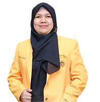
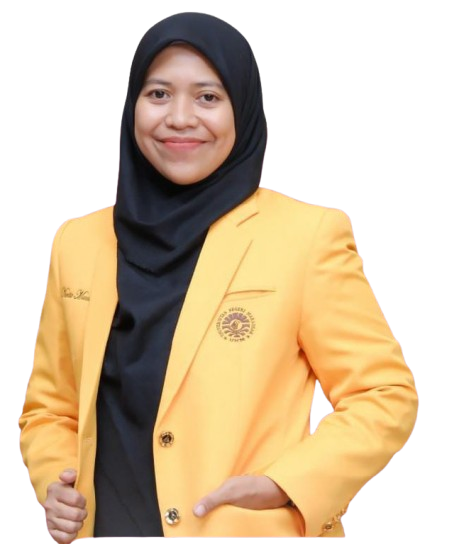
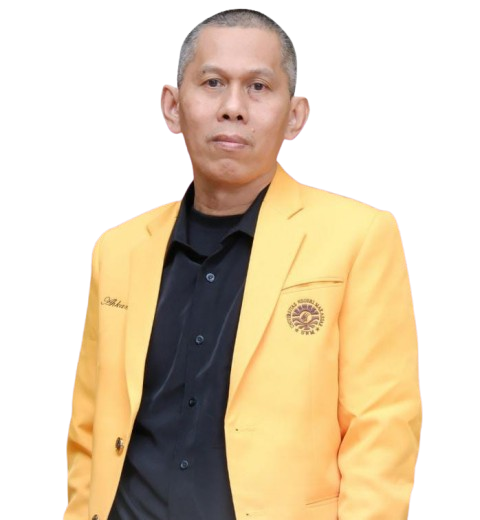
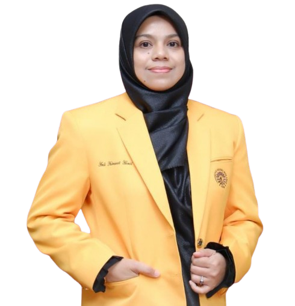
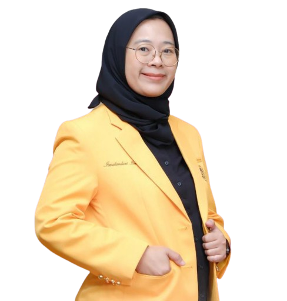
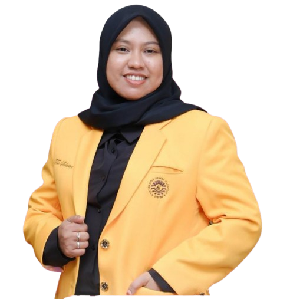
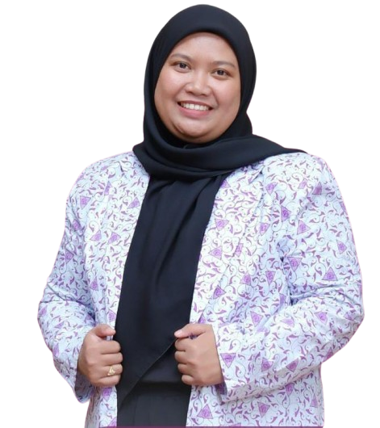

Ketua Pusat Layanan Psikologi
Universitas Negeri Makassar

Wakil Ketua Pusat Layanan Psikologi
Universitas Negeri Makassar

Koor Div. Penelitian & Pengembangan Alat Ukur
Universitas Negeri Makassar

Koor Div. Psikologi Industri & Organisasi
Universitas Negeri Makassar

Koor Div. Psikologi Klinis
Universitas Negeri Makassar

Koor Div. Pendidikan & Perkembangan
Universitas Negeri Makassar

Staf Pusat Layanan Psikologi
Universitas Negeri Makassar

Daftar Tim Siikolog
Sikolog Klinis
- Widyastuti, S. Psi., M. Psi., Psikolog
- Dr. Hj. Sitti Murdiana, S. Psi., M. Psi., Psikolog
- Ismalandari Ismail, S. Psi., M. Psi., Psikolog
- Dr. Rohmah Rifani, S.Psi., M.Si., Psikolog
- Ahmad Ridfah, S. Psi., M. Psi., Psikolog
- Asmulyani Asri, S. Psi., M. Psi., Psikolog
- Kartika Cahyaningrum, S. Psi., M. Psi., Psikolog
- Novi Yanti Pratiwi, S. Psi., M. Psi., Psikolog
- Rahmat Permadi., S. Psi., M. Psi., Psikolog
- Andi Fitri Wahyuni, M. Psi., Psikolog
- Harlina Hamid, S. Psi., M. Si., M. Psi., Psikolog
- Roselina Dwi Hormansyah, M. Psi., Psikolog
- Fadillah Fira Firmanilah, S. Psi., M. Psi., Psikolog
- Diah Ayu Permatasari, S. Psi., M. Psi., Psikolog
Sikolog Industri & Organisasi
- Nur Afni Indahari Arifin, S. Psi., M. Psi., Psikolog
- Dr. Resekiani Mas Bakar, S. Psi., M. Psi., Psikolog
- Dr. Ismarli Muis, S. Psi., M. Si., Psikolog
- Dr. Hilwa Anwar, M. A., Psikolog
- Rahmawati Syam, S. Psi., M. Psi., Psikolog
- St. Hadjar Nurul Istiqamah, S. Psi., M. Psi., Psikolog
- Iradat Rayhan Sofyan, S. Psi., M. Psi., Psikolog
- Siti Nur’ainun Zakiyah, S. Psi., M. Psi. Psikolog
- Andi Syahriana Asdar, S. Psi., M. Psi., Psikolog
Sikolog Pendidikan & Perkembangan
- Eva Meizara Puspita Dewi, S. Psi., M. Si., Psikolog
- Novita Maulidya Jalal, S. Psi., M. Psi., Psikolog
- Amirah Aminanty Agussalim, S. Psi., M. Psi., Psikolog
- Astiti Tenriawaru Ahmad, S. Psi., M. Psi., Psikolog
- Nurfajriyanti Rasyid, S. Psi., M. Psi., Psikolog
- Kasmayani Karim, S. Psi., M. Psi., Psikolog
- Rizkia Hidayati, S. Psi., M. Psi., Psikolog
- Dr. Dian Novita Siswanti, S. Psi., M. Si., M. Psi., Psikolog
- Eka Suhartiningsih Jafar, S. Psi., M. Psi., Psikolog